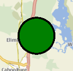

MapCircle QML Type
The MapCircle type displays a geographic circle on a Map. More...
| Import Statement: | import QtLocation 6.6 |
| Since: | QtLocation 5.5 |
- List of all members, including inherited members
- MapCircle is part of QML Maps Plugin.
Properties
- autoFadeIn : bool
- border
- border.color : color
- border.width : int
- center : coordinate
- color : color
- opacity : real
- radius : real
- referenceSurface : enum
Detailed Description
The MapCircle type displays a geographic circle on a Map, which consists of all points that are within a set distance from one central point. Depending on map projection, a geographic circle may not always be a perfect circle on the screen: for instance, in the Mercator projection, circles become ovoid in shape as they near the poles. To display a perfect screen circle around a point, use a MapQuickItem containing a relevant Qt Quick type instead.
By default, the circle is displayed as a 1 pixel black border with no fill. To change its appearance, use the color, border.color and border.width properties.
Internally, a MapCircle is implemented as a many-sided polygon. To calculate the radius points it uses a spherical model of the Earth, similar to the atDistanceAndAzimuth method of the coordinate type. These two things can occasionally have implications for the accuracy of the circle's shape, depending on position and map projection.
Note: Dragging a MapCircle (through the use of MouseArea or PointHandler) causes new points to be generated at the same distance (in meters) from the center. This is in contrast to other map items which store their dimensions in terms of latitude and longitude differences between vertices.
Example Usage
The following snippet shows a map containing a MapCircle, centered at the coordinate (-27, 153) with a radius of 5km. The circle is filled in green, with a 3 pixel black border.
Map { MapCircle { center { latitude: -27.5 longitude: 153.0 } radius: 5000.0 color: 'green' border.width: 3 } }

Property Documentation
autoFadeIn : bool |
This property holds whether the item automatically fades in when zooming into the map starting from very low zoom levels. By default this is true. Setting this property to false causes the map item to always have the opacity specified with the QtQuick::Item::opacity property, which is 1.0 by default.
This property is part of the border group property. The border property holds the width and color used to draw the border of the circle. The width is in pixels and is independent of the zoom level of the map.
The default values correspond to a black border with a width of 1 pixel. For no line, use a width of 0 or a transparent color.
center : coordinate |
This property holds the central point about which the circle is defined.
See also radius.
color : color |
This property holds the fill color of the circle when drawn. For no fill, use a transparent color.
opacity : real |
This property holds the opacity of the item. Opacity is specified as a number between 0 (fully transparent) and 1 (fully opaque). The default is 1.
An item with 0 opacity will still receive mouse events. To stop mouse events, set the visible property of the item to false.
radius : real |
This property holds the radius of the circle, in meters on the ground.
See also center.
[since 6.5] referenceSurface : enum |
This property determines the reference surface of the circle. If it is set to QLocation::ReferenceSurface::Map the circle is drawn as a circe on the map with radius approximated to match the map scale at the center of the circle. If it is set to QLocation::ReferenceSurface::Globe the circle is mapped onto a sphere and the great circle path is used to determine the coverage of the circle. Default value is QLocation::ReferenceSurface::Map.
This property was introduced in Qt 6.5.